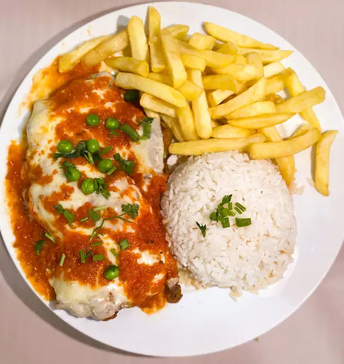
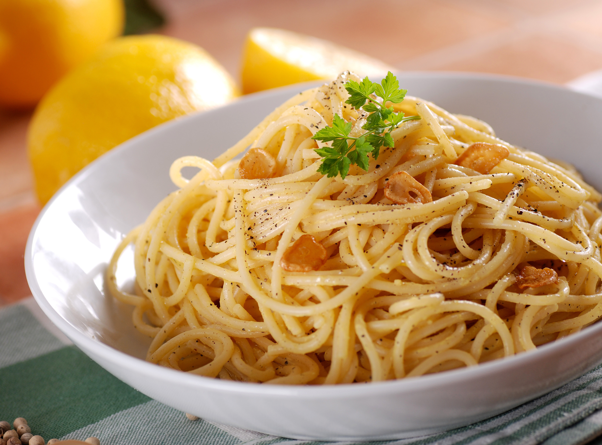

Caique DEV
Minha História
Se você está aqui, provavelmente quer saber mais sobre mim, certo? Eu sou o Caique, tenho 18 anos. Fui criado pela minha vó, tenho bastante sonhos e vontade de realizar eles.
MÚSICAS
O que quero viver com uma playlist musical.
- Uma música para quando me entendi como um ser.
- A música do seu momento mais para baixo.
- Uma música do meu momento reflexivo.
- Uma música para o meu melhor momento.
- Uma música para quando entrei para o PROA.
- Uma música para quando eu conquistar tudo o que quiser conquistar.
Três músicas que eu não conhecia, até começar essa atividade.
Jantares
Comer é sempre bom... Sempre!
Tenho um encontro com a Alessandra Negrini, iremos comer Frango a Parmegiana. A mistura da carne com o empanado, ao molho e o queijo garantem um dos sabores mais apreciados da culinária brasileira.
Tenho um encontro com a Isis Valverde, iremos comer Espaguete. É o tipo mais tradicional de todas as massas. Possui um formato cilíndrico e é feito a partir de uma mistura de farinha e ovos.
Tenho um encontro com o Neymar JR, iremos comer panqueca de frango. É um tipo de massa frita em pouco óleo sobre uma chapa ou frigideira quente, feita basicamente com ovos, farinha e leite.
Curiosidade ou Interesse
Essa página é uma entrevista peculiar, com perguntas que não são simples.
- Qual a sua melhor lembrança?
- Viajar por todo o mundo ou ler todos os livros?
- Quem é a pessoa que te conhece melhor? Essa é a mesma pessoa que você conhece melhor?
- Um dia mágico está chegando e nesse dia você poderá ter três horas a mais nesse dia. Você pode escolher o dia. Que dia você escolheria e o que você faria com esse dia?
- Se você pudesse fazer as outras pessoas acreditarem em algo que você acredita, o que seria?